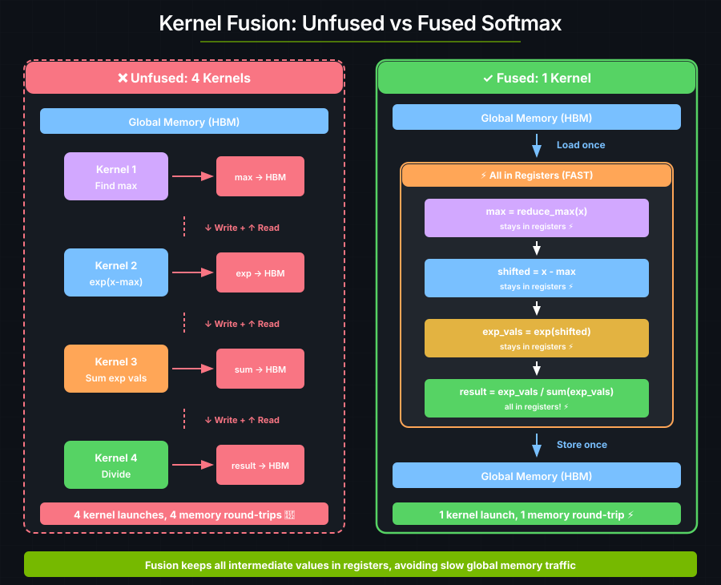
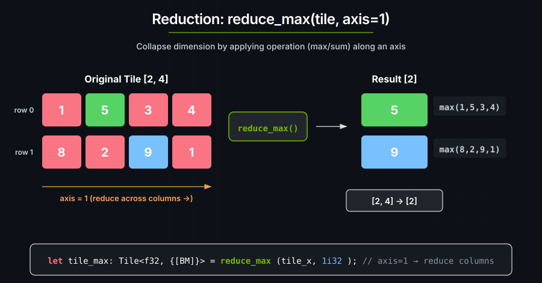

5. Fused Softmax#
Softmax is a multi-step operation:
softmax(x)_i = exp(x_i - max(x)) / Σ exp(x_j - max(x))
A naive implementation would use separate kernels for each step. Kernel fusion combines all steps into one kernel to avoid redundant memory traffic. Each kernel launch has overhead (~10–20 microseconds), and each round-trip to global memory is slow.

Numerical stability#
Subtracting the row maximum before calling exp prevents overflow:
x = [100, 101, 102]
exp(x) = [2.7×10⁴³, 7.3×10⁴³, 2.0×10⁴⁴] ← Overflow! These are inf in float32
With max subtraction:
x = [100, 101, 102]
max = 102
x - max = [-2, -1, 0]
exp(x - max) = [0.135, 0.368, 1.0] ← Safe values
The result is mathematically identical:
exp(x_i - max) / Σ exp(x_j - max)
= [exp(x_i) / exp(max)] / [Σ exp(x_j) / exp(max)]
= exp(x_i) / Σ exp(x_j)
Softmax kernel#
use cuda_async::device_operation::DeviceOp;
use cuda_core::Device;
use cutile;
use cutile::api::arange;
use cutile::error::Error;
use cutile::tensor::{IntoPartition, Reshape, Tensor, ToHostVec, Unpartition};
use std::sync::Arc;
#[cutile::module]
mod my_module {
use cutile::core::*;
#[cutile::entry()]
fn softmax<const BM: i32, const BN: i32>(
y: &mut Tensor<f32, { [BM, BN] }>,
x: &Tensor<f32, { [-1, -1] }>,
) {
let tile_x: Tile<f32, { [BM, BN] }> = x.load_like(y);
// Find max per row (for numerical stability)
let tile_x_max: Tile<f32, { [BM] }> = reduce_max(tile_x, 1i32);
let tile_x_max: Tile<f32, { [BM, BN] }> =
tile_x_max.reshape(shape![BM, 1]).broadcast(y.shape());
// Subtract max and exponentiate
let num: Tile<f32, { [BM, BN] }> = exp(tile_x - tile_x_max);
// Sum per row
let denom: Tile<f32, { [BM] }> = reduce_sum(num, 1);
let denom = denom.reshape(shape![BM, 1]).broadcast(y.shape());
// Divide
y.store(num / denom);
}
}
use my_module::softmax;
fn main() -> Result<(), Error> {
let device = Device::new(0)?;
let stream = device.new_stream()?;
let (m, n) = (4usize, 8usize);
let (bm, bn) = (2usize, n);
let input: Arc<Tensor<f32>> = arange(m * n).sync_on(&stream)?.into();
let x: Arc<Tensor<f32>> = input.dup().sync_on(&stream)?.reshape(&[m, n])?.into();
let y = input.dup().sync_on(&stream)?.reshape(&[m, n])?.partition([bm, bn]);
let (y, _x) = softmax(y, x).sync_on(&stream)?;
let y_host: Vec<f32> = y.unpartition().to_host_vec().sync_on(&stream)?;
// Each row should sum to 1.0
for i in (0..y_host.len()).step_by(n) {
let row_sum: f32 = y_host[i..i+n].iter().sum();
println!("softmax row sum = {} (expected 1.0)", row_sum);
}
Ok(())
}
Output:
softmax row sum = 1 (expected 1.0)
softmax row sum = 1 (expected 1.0)
softmax row sum = 1 (expected 1.0)
softmax row sum = 1 (expected 1.0)
Each row sums to 1.0 — a probability distribution.
Reduction Operations#
Reductions collapse a dimension by applying an operation:
let tile_x_max: Tile<f32, { [BM] }> = reduce_max(tile_x, 1i32);

After reduction, reshape and broadcast to match the original tile:
// [BM] → [BM, 1] → [BM, BN]
let tile_x_max: Tile<f32, { [BM, BN] }> =
tile_x_max
.reshape(shape![BM, 1]) // [2] → [2, 1]
.broadcast(y.shape()); // [2, 1] → [2, 8]
Keeping intermediate values in registers#
The fused kernel keeps its intermediate values in registers:
// 1. LOAD once
let tile = input.load_like(output);
// 2. ALL COMPUTATION in registers
let step1 = reduce_max(tile, axis);
let step2 = tile - step1.broadcast(...);
let step3 = exp(step2);
let step4 = reduce_sum(step3, axis);
let result = step3 / step4.broadcast(...);
// 3. STORE once
output.store(result);
Key Takeaways#
Concept |
What It Means |
|---|---|
Kernel fusion |
Combine multiple ops into one kernel to avoid memory traffic |
Numerical stability |
Subtract max before exp to prevent overflow |
Reduction ops |
Collapse a dimension: reduce_max, reduce_sum |
Reshape + Broadcast |
After reduction, reshape to use with the original data |
Exercise 1: Column-wise Softmax#
Modify to compute softmax along axis 0 (columns) instead of axis 1 (rows):
let col_max: Tile<f32, { [BN] }> = reduce_max(tile_x, 0i32);
What changes need to be made to the reshape and broadcast calls?
Exercise 2: Temperature Scaling#
Add a temperature parameter for softer or sharper distributions:
fn softmax_with_temp<const BM: i32, const BN: i32>(
y: &mut Tensor<f32, {[BM, BN]}>,
x: &Tensor<f32, {[-1, -1]}>,
temperature: f32, // Higher = more uniform, Lower = more peaked
) {
let tile_x = x.load_like(y);
let scaled = tile_x / temperature.broadcast(y.shape());
// ... rest of softmax ...
}
Exercise 3: Log-Softmax#
Many ML frameworks use log-softmax because it is more numerically stable. Can you implement it?
Hint
log_softmax(x)_i = x_i - max(x) - log(Σ exp(x_j - max(x)))
You can fuse this too.
See also#
Tensors and Tiles —
reduce_max,reduce_sum, and broadcasting patternsPerformance — kernel fusion and arithmetic intensity
DSL API — reduction operator signatures